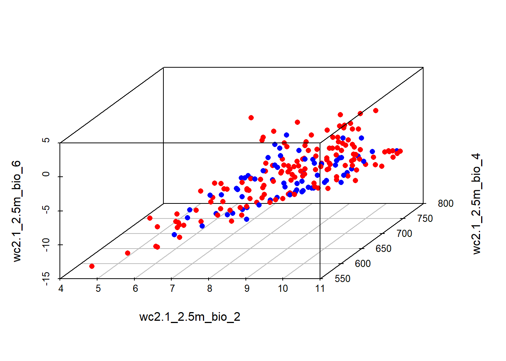
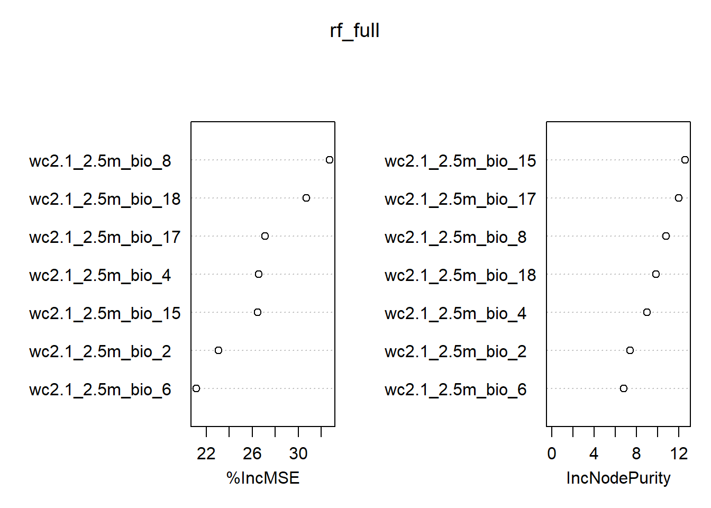
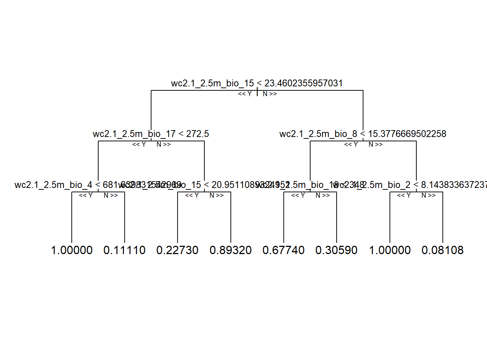
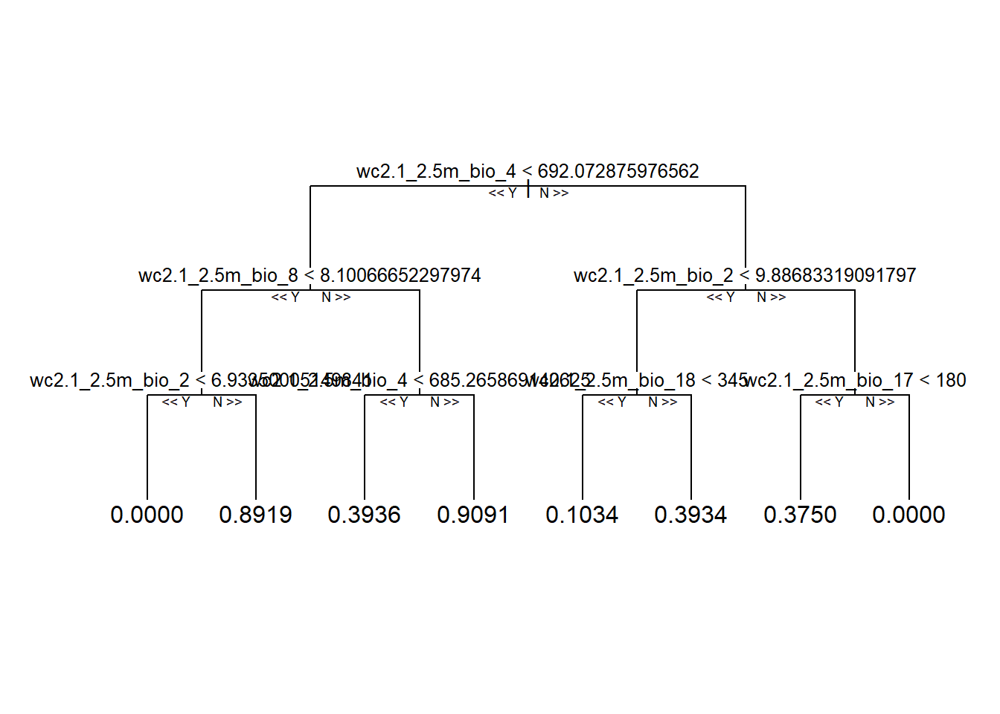

stirius_pa_final <- readRDS("01_data/stirius_pa_final.RDS")
Summary
In this lab you will:
- visualise presences and pseudo absences along selected environmental variables,
- be introduced to modelling algorithms,
- fit Generalised Linear Models and Random Forest models,
- select the best model based on Akaike Information Criteria (AIC).
Before we start
Task
Open the folder
Introduction to species distribution models,Start RStudio from the
Rproject iconnamedIntroduction to species distribution models.Open the R script named
Erebia stirius.When following this lab, continue to copy & paste the code in the script so it is organised as it is in teaching materials.
Lab plan


Visualise stirius_pa_final data
First, we will load the data that we prepared in the last lab. The dataset is saved as .RDS files in 01_data folder. We will import it using readRDS() function and assign it to the objects with the same names as in lab 2: stirius_pa_final. This is a dataframe in which we prepared species presence points and pseudo-absence points and extracted values for environmental variables that are not highly correlated (bio2, bio4, bio6, bio 8, bio15, bio17 and bio18).
This is how our presence - pseudo-absences are distributed in geographical space. Note that pseudo-absences were generated randomly and they are very likely different on your computers.
We will first visualise, how presences (1) and pseudo-absences (0) are distributed along one environmental variable of choice (bio2):
library(ggplot2)
ggplot(stirius_pa_final, aes(x = wc2.1_2.5m_bio_2, y = presence)) +
geom_point() +
theme_classic()Presences and pseudo-absences along two environmental variables:
ggplot(stirius_pa_final, aes(x = wc2.1_2.5m_bio_2,
y = wc2.1_2.5m_bio_4,
col = as.factor(presence))) +
geom_point() +
theme_classic()Presences and pseudo-absences along three environmental variables:
install.packages("scatterplot3d")library("scatterplot3d")colors <- c("red", "blue")
colors <- colors[as.factor(stirius_pa_final$presence)]
scatterplot3d(dplyr::select(stirius_pa_final,
wc2.1_2.5m_bio_2,
wc2.1_2.5m_bio_4,
wc2.1_2.5m_bio_6,),
pch = 16, color = colors)
Task
Modify the above code by changing the environmental variables along which presences - pseudo-absences are plotted. You need to change only the numbers at the end of wc2.1_2.5m_bio_x, but keep in mind, that not all numbers from 1 - 19 are available, but only those that were selected in the previous lab.
Modelling algorithms
Remember our introductory class and the questions for you:
- What is a model?
- How do you understand / perceive the term model?
Algorithms for predicting/projecting the distribution of species in geographic space on the basis of a mathematical representation of their known distribution in environmental space.
The task of a modelling algorithm is to identify potentially complex non-linear relationships in multi-dimensional environmental space and project them to 2 dimensional geographic space (Pearson 2010). Simplified, the algorithms project:
- to areas of known distributional area,
- to parts of the actual distribution area, that is currently unknown but occupied,
- to areas that are currently not occupied.
Additionally, we need to acknowledge some degree of error in the algorithms ability to fit observed records, and thus expect the fourth projection:
- areas that are neither the actual nor the potential distribution of the species (Pearson 2010).

Modeling algorithms will identify areas with similar environments to where the species has been observed. Most algorithms generally do not return the presence (1) or absence (0) of the species, but the probability or suitability for finding the species in any given cell on a map based on observed species-environment relationships.
There is plethora of different modelling algorithms used for modelling species/habitat distribution in the literature, that broadly belong to:
- statistical (regression), i.e.:
- Generalized Additive Models (GAM),
- Generalized Linear Models (GLM),
- Lasso and Elastic-Net Regularized Generalized Linear Models (GLMNET),
- Multivariate Adaptive Regression Splines (MARS),
- Mixture Discriminant Analysis (MDA),
- Flexible Discriminant Analysis (FDA), etc.,
- machine learning, i.e.:
- Boosted Regression Trees (BRT),
- Classification and Regression Trees (CART)
- Maximum Entropy (MAXENT)
- Random Forests (RF),
- Recursive Partitioning and Regression Trees (RPART), etc.,
- artificial intelligence algorithms, i.e.:
- Artificial Neural Networks (ANN),
- Support Vector Machines (SVM), etc.
- Artificial Neural Networks (ANN),
These algorithms are implemented in multiple R packages, including: sdm, ENMTools, biomod2, ecospat, etc.
The modelling algorithm selection is based on multiple considerations, is not a straigthforward process and there are no simple answers (Pearson 2010):
- data (presence only, presence - background, presence - (pseudo)absence)
- aim of the study
- understanding which variables influence our species distribution?
- prediction accuracy to identify potential present distribution?
- prediction accuracy to extrapolation beyond the range of data used to build the model (past/future scenarios)?
Additionally, a developing approach is to create an ensemble of modeling algorithms - which essentially means applying multiple modeling algorithms to the data and “merge” the models together to project into present geographic space or new conditions (past / future).
Due to high complexity of this field, we will only use the two following algorithms and just briefly address their main strengths and weaknesses:
- Generalized Linear Models (GLM) and
- Random Forests (RF).
Generalised linear models (GLM; Guisan et al., 2017, p. 167)
The family of presence-absence approaches is diverse and relies on different statistical principles. Among the many methods from this group we will create a model using the Generalized linear model (GLM) method. This is a regression-based approach which relates a response variable (in our case presence-absence) to a set of pre selected environmental predictors (in our case bioclimatic variables). The classical linear regression (ordinary least-square) is valid only when the response variable is normally distributed. GLMs represent a more flexible family of regression models, which allow the response variable to follow different exponential distributions (including binomial).
ADVANTAGES
- The response variable can have any form of exponential distribution type (binomial in our case)
- Able to deal with categorical predictors
- Relatively easy to interpret and allows a clear understanding of how each of the predictors are influencing the outcome
- Less susceptible to overfitting
LIMITATIONS
- Needs relatively large datasets. The more predictor variables, the larger the sample size required. As a rule of thumb, the number of predictor variables should be less than number of presences divided by 10.
- Sensitive to outliers
A generalized linear model consists of a linear predictor:
\[ \begin{equation} \ η_{i} = β_{0} + β_{1}x_{1i} + ... + β_{p}x_{pi} \end{equation} \]
and a link function, that describes how response depends on the linear predictor:
\[ \begin{equation} \ g(µ_{i}) = η_{i} \end{equation} \]
When using GLM on binary data (0 and 1) a logistic function is most commonly used as a link function.
The process of model building can be forward or backward, sometimes also combining both strategies:
- forward building means starting with one predictor and adding one more in each round until full model (with all predictors)
- backward building means starting with full model and removing predictors one by one until finding the best model.
Application of GLM to Erebia stirius dataset
Generalized linear models can be fitted in R using the glm() function that is included in base R. The main arguments to a glm() function are:
formula,family =and
data.
The formula to glm is specified as y ∼ x1 + x2 … xi, where y is a response variable, x1, x2 to xi are the names of numeric vectors (continuous variables) or factors (categorical variables) - which are our predictor variables. All specified variables must be in the workspace or in the data frame passed to the data argument. The family argument takes the name of a family function which specifies the link function and the variance function. The exponential family functions available in R are:
- binomial(link = “logit”)
- gaussian(link = “identity”)
- Gamma(link = “inverse”)
- inverse.gaussian(link = “1/mu2”)
- poisson(link = “log”)
There are many other arguments (weights, subset, na.action, start = NULL, etastart, mustart, offset, control = glm.control(...), model = TRUE, method = ”glm.fit”, x = FALSE, y = TRUE, contrasts = NULL, ...) that we will not delve in, but with which we can calibrate our models to different specific situations.
We will do the model building as a backward process, starting by a full model. This model will include all possible environmental variables within our dataset and will be the most complex of all models. Within glm() function we specify:
presence ~ bio2 + bio4 + bio8 + bio15 + bio17 + bio18(presence explained by a linear combination of all bio variables),family = "binomial"(our response variable - presence - follows binomial distribution (0 and 1) and the model needs to take this into account)data = stirius_pa_final(to tell the model, where to look for the data).
We will save the results of this call to an object named glm_full - “full” indicating that all possible variables are included in the model.
glm_full <- glm(presence ~ wc2.1_2.5m_bio_2 + wc2.1_2.5m_bio_4 + wc2.1_2.5m_bio_6 + wc2.1_2.5m_bio_8 + wc2.1_2.5m_bio_15 + wc2.1_2.5m_bio_17 + wc2.1_2.5m_bio_18,
# modeling presence with all env variables
family = "binomial", # using binomial distribution, and logistic function by default
data = stirius_pa_final) # variables and presence stored in stirius_pa_finalWe explore the results of a generalised linear model using the summary() function, applied on the object in which we stored the model (glm_full):
summary(glm_full)
Call:
glm(formula = presence ~ wc2.1_2.5m_bio_2 + wc2.1_2.5m_bio_4 +
wc2.1_2.5m_bio_6 + wc2.1_2.5m_bio_8 + wc2.1_2.5m_bio_15 +
wc2.1_2.5m_bio_17 + wc2.1_2.5m_bio_18, family = "binomial",
data = stirius_pa_final)
Coefficients:
Estimate Std. Error z value Pr(>|z|)
(Intercept) -2.4664717 3.5819782 -0.689 0.491089
wc2.1_2.5m_bio_2 0.2842938 0.2594362 1.096 0.273160
wc2.1_2.5m_bio_4 0.0004804 0.0062703 0.077 0.938925
wc2.1_2.5m_bio_6 -0.1024304 0.1081918 -0.947 0.343767
wc2.1_2.5m_bio_8 -0.2111851 0.0573542 -3.682 0.000231 ***
wc2.1_2.5m_bio_15 0.0569347 0.0347636 1.638 0.101470
wc2.1_2.5m_bio_17 0.0043713 0.0044787 0.976 0.329057
wc2.1_2.5m_bio_18 -0.0032971 0.0032837 -1.004 0.315332
---
Signif. codes: 0 '***' 0.001 '**' 0.01 '*' 0.05 '.' 0.1 ' ' 1
(Dispersion parameter for binomial family taken to be 1)
Null deviance: 415.89 on 299 degrees of freedom
Residual deviance: 366.14 on 292 degrees of freedom
AIC: 382.14
Number of Fisher Scoring iterations: 4Interpreting Coefficients, P-Values, Deviance and Akaike Information Criteria
The coefficient estimate (Estimate) in the output indicate the average change in the log odds of the response variable associated with a one unit increase in each predictor variable. For example, a one unit increase in the predictor variable bio2 is associated with an average change of -0.024 in the log odds of the response variable presence. This means that higher values of bio2 are associated with a lower likelihood of the presence variable taking on a value of 1.
The standard error gives us an idea of the variability associated with the coefficient estimate. The p-value (Pr(>|z|)) tells us the probability associated with a particular z value. This essentially tells us how well each predictor variable is able to predict the value of the response variable in the model.
For example, the p-value associated with the bio2 variable is .931. Since this value is more than .05, we would say that bio2 is not statistically significant predictor variable in the model. Depending on our choice, we may decide to use a significance level of .01, .05, or 0.10 to determine whether or not each predictor variable is statistically significant. In this model, only bio8 is statistically significant (Pr(>|z|) < 0.05), while bio17 has the highest Pr(>|z|) value (0.987), which means we can consider it as a candidate variable to exclude for the next model.
The null deviance in the output tells us how well the response variable can be predicted by a model with only an intercept term (meaning no predictors) and the residual deviance tells us how well the response variable can be predicted by the specific model that we fit with the selected predictor variables. The lower the value, the better the model is able to predict the value of the response variable.
The Akaike information criterion (AIC) is a metric that is used to compare the fit of different regression models. The actual value for the AIC is meaningless, however, when we compare two modely, the one with lower AIC value is considered to be better. However, if we fit several regression models, we can compare the AIC value of each model. The model with the lowest AIC offers the best fit, but we need to take into account the number of predictor variables in each (generally, the model who explains more/better with less variables should be selected).
In the next step, we will build a model from which we will remove the bio17 variable, that has the highest Pr(>|z|) value in the full model and was not statistically significant for describing the response variable. We will save this model in a new object called glm_2
glm_2 <- glm(presence ~ wc2.1_2.5m_bio_2 + wc2.1_2.5m_bio_4 + wc2.1_2.5m_bio_6 + wc2.1_2.5m_bio_8 + wc2.1_2.5m_bio_15 + wc2.1_2.5m_bio_18,
family = "binomial",
data = stirius_pa_final)And explore the results of a generalised linear model using the summary() function, applied on the object in which we stored the model (glm_2):
summary(glm_2)
Call:
glm(formula = presence ~ wc2.1_2.5m_bio_2 + wc2.1_2.5m_bio_4 +
wc2.1_2.5m_bio_6 + wc2.1_2.5m_bio_8 + wc2.1_2.5m_bio_15 +
wc2.1_2.5m_bio_18, family = "binomial", data = stirius_pa_final)
Coefficients:
Estimate Std. Error z value Pr(>|z|)
(Intercept) -0.8612365 3.1958417 -0.269 0.788
wc2.1_2.5m_bio_2 0.2631602 0.2551330 1.031 0.302
wc2.1_2.5m_bio_4 0.0003148 0.0062487 0.050 0.960
wc2.1_2.5m_bio_6 -0.0300533 0.0790514 -0.380 0.704
wc2.1_2.5m_bio_8 -0.2441128 0.0469849 -5.196 2.04e-07 ***
wc2.1_2.5m_bio_15 0.0386499 0.0288147 1.341 0.180
wc2.1_2.5m_bio_18 -0.0007964 0.0020547 -0.388 0.698
---
Signif. codes: 0 '***' 0.001 '**' 0.01 '*' 0.05 '.' 0.1 ' ' 1
(Dispersion parameter for binomial family taken to be 1)
Null deviance: 415.89 on 299 degrees of freedom
Residual deviance: 367.11 on 293 degrees of freedom
AIC: 381.11
Number of Fisher Scoring iterations: 4In this model, again only bio8 is statistically significant (Pr(>|z|) < 0.05), while bio2 has the highest Pr(>|z|) value (0.93), which means we can consider it as a candidate variable to exclude for the next model.
In this step, we will build a model from which we will remove the bio2 variable, that had the highest Pr(>|z|) value in the glm_2 and was not statistically significant. We will save this model in a new object called glm_3
glm_3 <- glm(presence ~ wc2.1_2.5m_bio_4 + wc2.1_2.5m_bio_6 + wc2.1_2.5m_bio_8 + wc2.1_2.5m_bio_15 + wc2.1_2.5m_bio_18,
family = "binomial",
data = stirius_pa_final)And explore the results of a generalised linear model using the summary() function, applied on the object in which we stored the model (glm_3):
summary(glm_3)
Call:
glm(formula = presence ~ wc2.1_2.5m_bio_4 + wc2.1_2.5m_bio_6 +
wc2.1_2.5m_bio_8 + wc2.1_2.5m_bio_15 + wc2.1_2.5m_bio_18,
family = "binomial", data = stirius_pa_final)
Coefficients:
Estimate Std. Error z value Pr(>|z|)
(Intercept) -1.9182694 3.0254926 -0.634 0.526
wc2.1_2.5m_bio_4 0.0052376 0.0040373 1.297 0.195
wc2.1_2.5m_bio_6 -0.0351972 0.0792775 -0.444 0.657
wc2.1_2.5m_bio_8 -0.2439038 0.0469769 -5.192 2.08e-07 ***
wc2.1_2.5m_bio_15 0.0338647 0.0283973 1.193 0.233
wc2.1_2.5m_bio_18 -0.0006277 0.0020456 -0.307 0.759
---
Signif. codes: 0 '***' 0.001 '**' 0.01 '*' 0.05 '.' 0.1 ' ' 1
(Dispersion parameter for binomial family taken to be 1)
Null deviance: 415.89 on 299 degrees of freedom
Residual deviance: 368.19 on 294 degrees of freedom
AIC: 380.19
Number of Fisher Scoring iterations: 4We will drop also the bio18 variable and than conclude with modifying the model:
glm_4 <- glm(presence ~ wc2.1_2.5m_bio_4 + wc2.1_2.5m_bio_6 + wc2.1_2.5m_bio_8 + wc2.1_2.5m_bio_15,
family = "binomial",
data = stirius_pa_final)
summary(glm_4)
Call:
glm(formula = presence ~ wc2.1_2.5m_bio_4 + wc2.1_2.5m_bio_6 +
wc2.1_2.5m_bio_8 + wc2.1_2.5m_bio_15, family = "binomial",
data = stirius_pa_final)
Coefficients:
Estimate Std. Error z value Pr(>|z|)
(Intercept) -2.120876 2.947161 -0.720 0.4718
wc2.1_2.5m_bio_4 0.005060 0.003989 1.269 0.2046
wc2.1_2.5m_bio_6 -0.019715 0.061032 -0.323 0.7467
wc2.1_2.5m_bio_8 -0.242115 0.046605 -5.195 2.05e-07 ***
wc2.1_2.5m_bio_15 0.038892 0.023166 1.679 0.0932 .
---
Signif. codes: 0 '***' 0.001 '**' 0.01 '*' 0.05 '.' 0.1 ' ' 1
(Dispersion parameter for binomial family taken to be 1)
Null deviance: 415.89 on 299 degrees of freedom
Residual deviance: 368.28 on 295 degrees of freedom
AIC: 378.28
Number of Fisher Scoring iterations: 4Now we’ve fit several GLM models, we can compare the AIC value of each model. The model with the lowest AIC generally offers the best fit.
To resolve a common question about AIC: What is considered a good AIC value?
The simple answer: There is no value for AIC that can be considered “good” or “bad” because we simply use AIC as a way to compare regression models. The model with the lowest AIC offers the best fit. The absolute value of the AIC value is not important. A rule of thumb is that models within 2 units of difference (ΔAIC) are considered as the best candidate models, while often ΔAIC ≤ 6 (maximum ≤ 10) is used for final model selection (Richards et al., 2011). Important consideration is also the number of explanatory (predictor) variables in candidate models, with simpler (parsimonious) models with the lowest number of predictors being better than models with higher number of predictor variables.
We extract the AIC value of the GLM models using AIC() function:
AIC(glm_full)[1] 382.1426AIC(glm_2)[1] 381.1143AIC(glm_3)[1] 380.1873AIC(glm_4)[1] 378.2817Having the lowest AIC and the lowest number of predictors, the glm_4 is the best candidate model among the four models we have created and will be used in the next lab to project the habitat suitability to geographic space.
Random forest (RF; Guisan et al., 2017, p. 203)
Random forests or random decision forests are an ensemble learning method for classification, regression and other tasks that operates by constructing a multitude of decision trees at training time. The method is relatively new, being defined and originally developed in 2001. Random forests are frequently used as “blackbox” models, as they generate reasonable predictions across a wide range of data while requiring little configuration. Random forests can be also used to rank the importance of variables in a regression or classification problem and are implemented in the R package randomForest.
The random forest model essentially represents an assembly of a selected number of decision trees, which are itself commonly used supervised classification algorithms. They are very popular for a few reasons:
- They perform quite well on classification problems,
- the decision path is relatively easy to interpret, and
- the algorithm to build (train) them is fast and simple.
A decision tree is a flowchart-like structure made of nodes and branches. At each node, a split on the data is performed based on one of the input features, generating two or more branches as output. More and more splits are made in the upcoming nodes and increasing numbers of branches are generated to partition the original data. This continues until a node is generated where all or almost all of the data belong to the same class and further splits — or branches — are no longer possible.

A nice explanation of decision tree to random forest model can be found here.
ADVANTAGES
- higher accuracy than a single decision tree and other classifying/regression methods
- offer a way of averaging multiple deep decision trees to reduce variance
LIMITATIONS
- lower interpretability within decision trees
- following the paths of tens or hundreds of trees to confirm that the model has learned realistic information is very hard
Application of RF to Erebia stirius dataset
The random forest model can be fitted using randomForest() function from the randomForest package. A call to build a random forest needs the following arguments:
formula,data,
while these are optional or predefined:
importance = TRUE,na.action = na.omit,ntree =mtry =maxnodes =, etc. …
We will build only a full random forest model that will include all possible environmental variables within our dataset. By default, the random forest will consist of 500 trees and will test random two variables at each split (mtry = sqrt(p); p = number of predictor variables). Within randomForest() function we specify:,
presence ~ bio2 + bio4 + bio6 + bio8 + bio15 + bio17 + bio18(presence explained by a linear combination of all bio variables),data = stirius_pa_final(to tell the model, where to look for the data),importance = TRUE(To assess importance of predictors in the model),na.action = na.omit(A function to specify the action to be taken if NAs are found - we will disregards NAs if present).
We will save the results of this call to an object named rf_full - “full” indicating that all possible variables are included in the model.
install.packages("randomForest")library(randomForest)rf_full <- randomForest(presence ~ wc2.1_2.5m_bio_2 + wc2.1_2.5m_bio_4 + wc2.1_2.5m_bio_6 + wc2.1_2.5m_bio_8 + wc2.1_2.5m_bio_15 + wc2.1_2.5m_bio_17 + wc2.1_2.5m_bio_18,
data = stirius_pa_final,
importance = TRUE,
na.action = na.omit)We can check the properties of our model, by typing the name of the object and running it:
rf_full
Call:
randomForest(formula = presence ~ wc2.1_2.5m_bio_2 + wc2.1_2.5m_bio_4 + wc2.1_2.5m_bio_6 + wc2.1_2.5m_bio_8 + wc2.1_2.5m_bio_15 + wc2.1_2.5m_bio_17 + wc2.1_2.5m_bio_18, data = stirius_pa_final, importance = TRUE, na.action = na.omit)
Type of random forest: regression
Number of trees: 500
No. of variables tried at each split: 2
Mean of squared residuals: 0.1362615
% Var explained: 45.5The output first shows us the formula, by which model was built and the type of random forest that this model belongs to (regression - numerical response value) and we didn’t need to specify that. randomForest() function will perform nonlinear multiple regression as long as the response variable is numeric. It confirms, that 500 trees were built and that 2 variables were tried at each split.
The output provides us also the mean of squared residuals and % variance explained, both measures indicating how well the model fits the data. Residuals are a difference between prediction of the model and the actual value. In our example, 0.14 means that the model was wrong (deviation from either 0 or 1) by 14% on average.
The model calibration can be done by changing the ntree = and mtry = arguments and try to achieve smaller mean squared residuals or higher % variance explained.
If we want to understand which variables are important according to the model, we set the importance = TRUE as in the code above. Random forest regression will provide two numerical outputs for our variables:
- decrease in mean square error (
%IncMSE) and - node purity.
Prediction error described as MSE is based on permuting out-of-bag sections of the data per individual tree and predictor, and the errors are then averaged. In the regression context, Node purity is the total decrease in residual sum of squares when splitting on a variable averaged over all trees (i.e. how well a predictor decreases variance). Of the two, MSE is a more reliable measure of variable importance that shows how much our model accuracy decreases, if we leave out each variable. With the varImpPlot() we can visualize the results:
importance(rf_full) %IncMSE IncNodePurity
wc2.1_2.5m_bio_2 24.74832 7.559808
wc2.1_2.5m_bio_4 26.01718 9.353795
wc2.1_2.5m_bio_6 22.66042 6.997017
wc2.1_2.5m_bio_8 32.30726 10.926089
wc2.1_2.5m_bio_15 28.65178 12.343102
wc2.1_2.5m_bio_17 26.69980 11.165710
wc2.1_2.5m_bio_18 28.58185 10.226903varImpPlot(rf_full)
We can see from the results that bio4 is the variable with lowest %IncMSE value, but its actual value is 23.9. That means that the accuracy of our model would drop by ~24% if we would leave this variable out. Based on this, we will not be removing any variables from our model.
Lastly, lets visualise some of the decision trees in our random forests. The tools for visualising them are not available in a formal R package on CRAN, but from a repository on github. For that we need to install devtools package first, and from it use the install_github() function to install araastat/reprtree package.
install.packages("devtools")
library(devtools)
install_github('araastat/reprtree')As always, we need to use library to access the function and plot them using plot.getTree() function. Within it we specify the random forest model, from which we want to plot the tree (rf_full), the number of nodes to display (depth = 4) and the consecutive number of tree to be shown (k = 500, 1 is the default).
library(reprtree)
reprtree::plot.getTree(rf_full, depth = 4) # first
reprtree::plot.getTree(rf_full, k = 500, depth = 4) # 500th
reprtree::plot.getTree(rf_full, k = 333, depth = 4) # 333thTake home message
In terms of model building, calibration and assessment, it always comes down to some theory and/or logic behind the data. Do the top predictors make biological/ecological sense? If not, why?
Modeling is an iterative process. we can get a better idea about the predictive error of our models when we save some data for performance testing only and we can also try out other methods as well.
“Rome was not built in one day, nor was any reliable model.”
(Good & Hardin, 2012)
Assignment
Task
Open R script that you named after the species you choose to work on.
Copy - paste
today'scode from theErebia stiriusscript to the end of your script.Adapt the code to achieve the following:
3.1) visualise, how presences (1) and pseudo-absences (0) are distributed along one, two and three environmental variables,
3.2) fit multiple Generalised Linear Models in a backward way. This means you start with all selected environmental variables and exclude step by step the ones that have the highest p-values.
3.3) fit a Random Forest Model with all environmental variables.
3.4) save the script with the code for your species,
3.5) make sure that the project folder will be available to you next week at the labs (either store it on USB, cloud or similar, in case it gets deleted from computers).